Las 10 pantallas principales, en celular (390 px) y tablet (820 px), calificadas con los 10 principios de Dieter Rams. Cada número se midió en la app real o en el código; los informes completos están en docs/design/audit-2026-11-14/.
Se rehacen la navegación móvil, los componentes base y el sistema de color. Los algoritmos, los datos, el modo sin red y los avisos funcionan y se quedan.
| Principio | Nota | Lo que la bajó |
|---|---|---|
| Estético | 0 | Rojo y azul con 6+ significados cada uno; 12 tamaños de letra; 147 tarjetas hechas a mano; 5 estilos de título; 4 escalas de semáforo. |
| Útil | 1 | Desde un evento no se abre el perfil de un equipo. Capturar un partido toma 4–5 toques y el número se teclea. Hoy abre con un mensaje vacío. |
| Comprensible | 1 | OPR, RS, σ, Brier sin explicación al tocar. "Oracle" nombra 3 cosas. La pantalla Evento mezcla inglés y español. |
| Discreto | 1 | Barra superior + barra inferior + botón de chat + banner de instalación tapan contenido en 5 pantallas. |
| Honesto | 1 | "Predicción de alta precisión" con solo 4 capturas; un "OPR" que es el promedio de puntos; "proyección lineal" que es Monte Carlo; "Acceso exclusivo" sin candado. |
| Minucioso | 1 | La mayoría de los botones mide menos de 44 px; casi no hay skeletons; el error de evento no ofrece ninguna salida. |
| Lo menos posible | 1 | 5 selectores de evento, 3 campos para seguir equipo, 6 pestañas más submodos. |
| Innovador | 1 | Lo único de PRIDE (scouting federado, forma en playoffs) no tiene forma propia: parece un dashboard genérico. |
| Duradero | 1 | Brillos difusos animados, hero con degradado, tarjetas muy redondeadas. |
| Ecológico | 1 | Scouting carga 583 KB de JS; una animación infinita ignora "reducir movimiento"; la app no sigue el tema del sistema. |
En app/globals.css el color de los botones, enlaces y pestañas (secondary) es exactamente el azul de alianza, y el color de error (danger) es exactamente el rojo de alianza. Por eso el rojo y el azul aparecen por toda la app con significados que no son "alianza".
Además, el rojo y el azul de alianza tienen casi la misma luminosidad (contraste entre ellos de 1.13:1 en oscuro), así que solo se distinguen por el tono: un daltónico no los separa. Y en tema claro hay texto negro sobre fondo rojo porque text-white está forzado con !important.
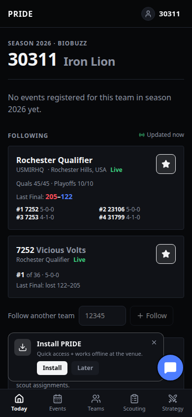
20 de los 27 controles de esta pantalla miden menos de 44 px. La interfaz sale en inglés aunque el usuario es mexicano: el idioma por defecto es inglés.
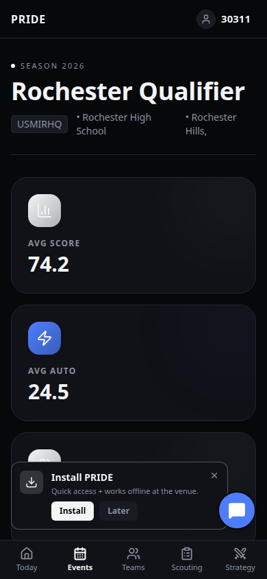
Más abajo: 6 pestañas más PRO, tablas de partidos de 900 px de ancho, ayudas de columna que solo aparecen con el mouse, y tocar un equipo filtra los partidos en lugar de abrir su perfil.
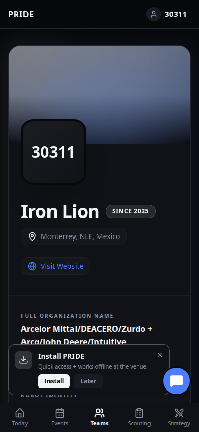
161 textos de 9 a 11 px. Los chips "#2/#5/#7/#8" tienen contraste de 3.1–3.4:1 (mínimo 4.5:1). Cifras negativas pintadas con el rojo de alianza.
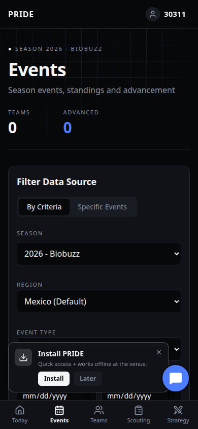
5 de los campos no tienen etiqueta accesible. Encabezados en español dentro de una interfaz en inglés.
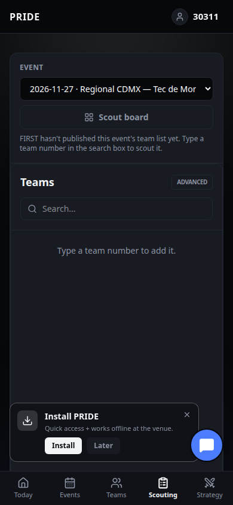
El formulario de BIOBUZZ tiene unos 47 controles en una sola página.
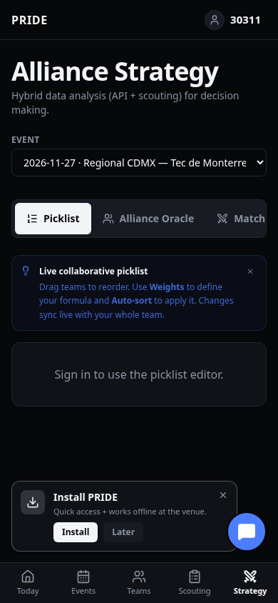
Fue la pantalla más lenta en mostrar su contenido principal: 2.75 s en un celular simulado (una sola medición).
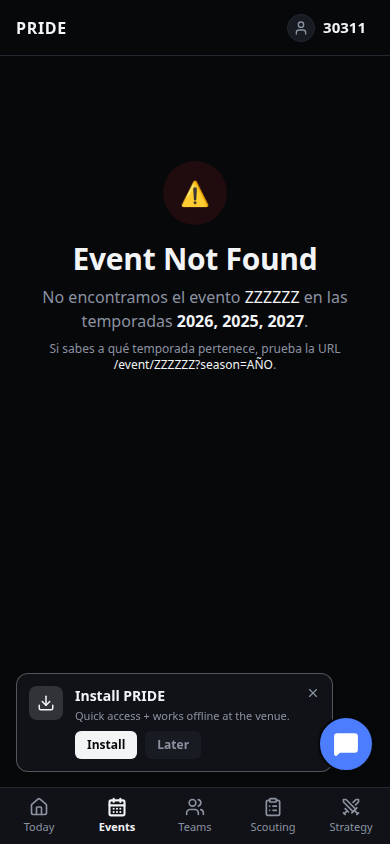
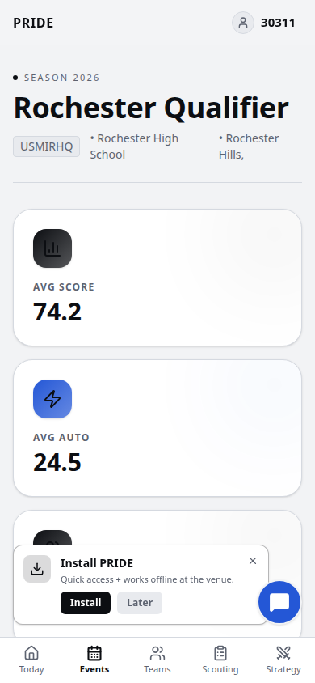
La app siempre abre en oscuro; el tema claro solo llega con el botón manual. Las 5 clases dark: del código siguen al sistema operativo, no a ese botón.
Riel fijo de 224 px a la izquierda y una columna de contenido de 596 px. Equipo usa rejillas de 2 a 4 columnas; Estrategia no aprovecha el ancho.
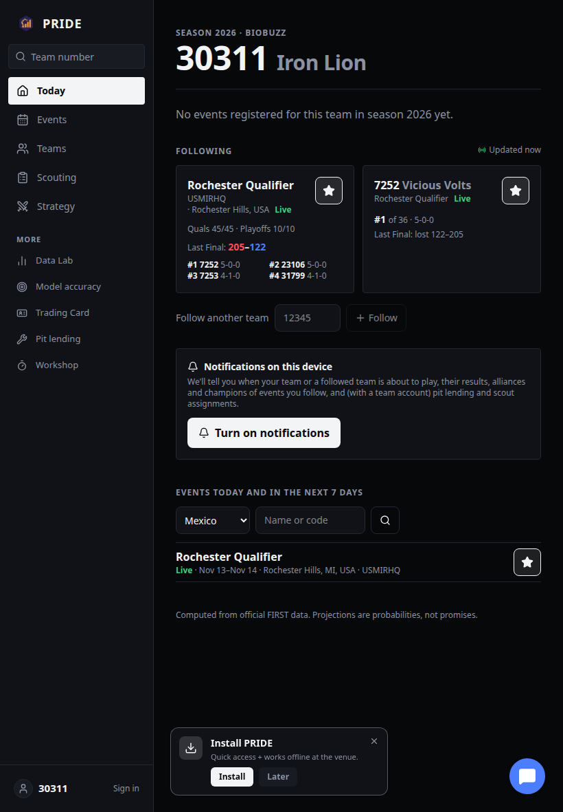
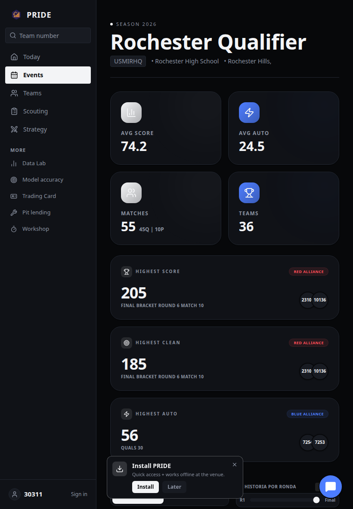
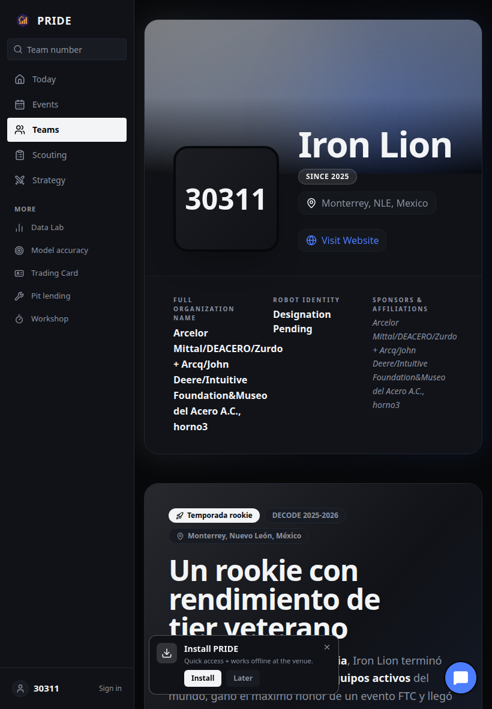
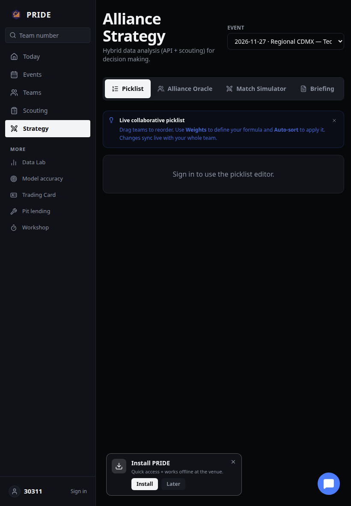
Prototipos con un color de marca que no sea rojo ni azul, grises en 3 niveles, estados propios y rojo/azul solo para alianzas, siempre con etiqueta.
La app del celular alrededor de 4 tareas del evento, cada una en 2 toques o menos, con un solo evento activo para toda la app.
Tokens, luego navegación, luego Hoy → Evento → Captura → Equipo → Estrategia en tablet, midiendo rendimiento en cada paso.